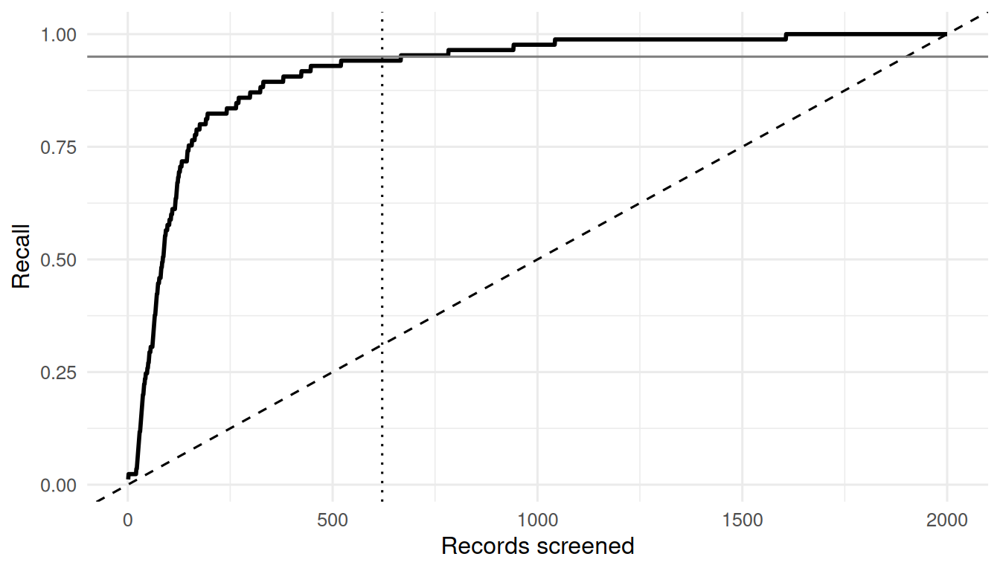
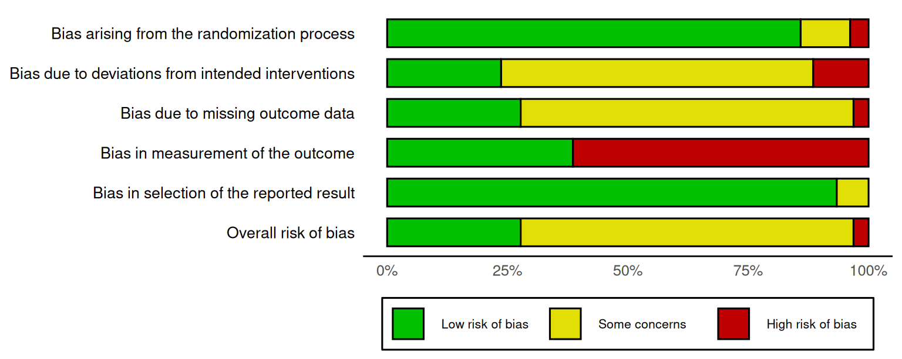
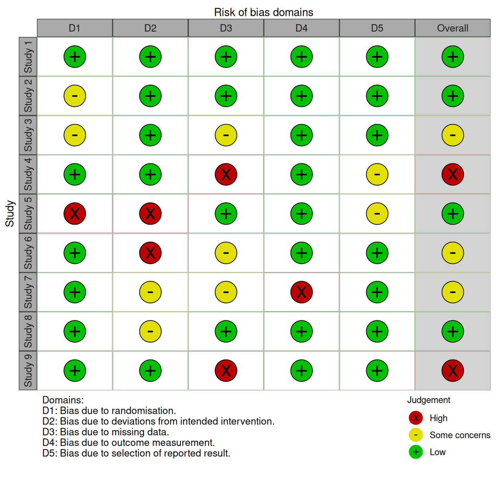

2 The Systematic Review Workflow
A meta-analysis is only as good as the set of studies it combines. If the search misses studies, if eligibility is judged inconsistently, if numbers are copied wrongly from papers, or if biased studies are pooled with sound ones without comment, no estimator in the later chapters can repair the damage. The systematic review is the set of procedures designed to prevent these failures, and to make the ones that remain visible.
This chapter walks through the workflow in the order a review team meets it: formulating the question, writing and registering a protocol, searching, removing duplicates, screening, data extraction, and risk-of-bias assessment. Along the way it shows how R supports each step: building a search string, deduplicating records, computing inter-rater agreement for screening decisions, simulating machine-learning-assisted screening, drawing a PRISMA 2020 flow diagram, keeping a codebook, reconciling double data extraction, plotting risk-of-bias assessments, and feeding those assessments into the synthesis. The authoritative references for this material are the Cochrane Handbook (Higgins et al. 2019) and, for the social sciences, Cooper et al. (2019).
2.1 Overview of the workflow
Table 2.1 summarizes the stages. Two principles cut across all of them. First, decisions are made before the data are seen whenever possible, and recorded in a protocol, so that the results cannot steer the methods. Second, every judgment that could be made differently by different people (whether a record is eligible, what number a paper reports, whether a trial is at high risk of bias) is made independently by at least two reviewers, with disagreements resolved by discussion or a third reviewer.
| Stage | Main output | Chapter |
|---|---|---|
| Question | PICO or equivalent; eligibility criteria | 2 |
| Protocol | Registered protocol (PROSPERO, OSF); PRISMA-P checklist | 2 |
| Search | Search strategies for each source; records retrieved | 2 |
| Deduplication | Unique records | 2 |
| Screening | Included studies; reasons for exclusion at full text; agreement statistics | 2 |
| Extraction | Codebook; extracted data in duplicate; reconciliation log | 2, 3 |
| Risk of bias | Domain-level and overall judgments per study and outcome | 2 |
| Synthesis | Meta-analysis or structured narrative synthesis | 4 to 14 |
| Certainty and reporting | GRADE ratings; PRISMA 2020 report; open data and code | 15 |
2.2 Formulating the question
A good review question is narrow enough to be answerable and broad enough to be useful. The standard device for structuring it is PICO (Richardson et al. 1995): the Population (or problem), the Intervention, the Comparator, and the Outcomes. Variants add or replace elements. PECO replaces the intervention with an Exposure for etiological questions, for example the effect of air pollution or of a management practice that is not deliberately assigned. PICOS adds the eligible Study designs, and a time frame or setting is often added as well. For qualitative and mixed-methods evidence syntheses, where “intervention” and “comparator” may not apply, the SPIDER tool (Sample, Phenomenon of Interest, Design, Evaluation, Research type) was proposed (Cooke et al. 2012).
The question translates into eligibility criteria, the rules that decide which studies enter the review. Criteria should be operational: someone who did not write them should be able to apply them consistently. “Adults” should say what age; “randomized” should say whether cluster-randomized and crossover trials count; “anxiety” should say whether a diagnosis is required or a symptom scale suffices. Criteria about language and publication status deserve particular care. Restricting to English-language or peer-reviewed publications is convenient but can introduce bias, and when such restrictions are used they belong in the eligibility criteria, not in the search, so that their consequences can be documented (Pieper and Puljak 2021).
Table 2.2 shows a PICOS specification for a running example used in this chapter, a review of mindfulness-based interventions for anxiety in adults.
| Element | Specification |
|---|---|
| Population | Adults (18+) with elevated anxiety symptoms or an anxiety disorder diagnosis; any setting |
| Intervention | Mindfulness-based programs (MBSR, MBCT, or adaptations) of at least four sessions |
| Comparator | Wait-list, usual care, or active control (analyzed separately) |
| Outcomes | Primary: anxiety symptoms at post-intervention on a validated scale. Secondary: depression, adverse events, follow-up anxiety |
| Study design | Randomized controlled trials, including cluster-randomized trials |
The comparator deserves as much thought as the intervention. Mindfulness compared with a wait-list and mindfulness compared with an active psychological treatment answer different questions, and pooling them would mix two estimands. Deciding in advance whether such contrasts will be analyzed separately, combined with a moderator, or analyzed in a network (Chapter 10) is a protocol decision.
2.3 Protocols and registration
A protocol states the question, eligibility criteria, search strategy, screening and extraction procedures, risk-of-bias tools, effect-size metrics, statistical model, planned subgroup and sensitivity analyses, and the approach to certainty assessment, before the review begins. Its purpose is the same as preregistration of a primary study: to separate decisions made in advance from decisions made after seeing the data, so that readers can tell confirmatory from exploratory analyses (Nosek et al. 2018). The PRISMA-P statement gives a 17-item checklist for protocol content (Moher et al. 2015), and its explanation and elaboration document gives examples of each item (Shamseer et al. 2015).
Protocols should be registered in a public, time-stamped registry. PROSPERO, run by the Centre for Reviews and Dissemination at the University of York, registers systematic reviews with a health-related outcome (Booth et al. 2012). Reviews outside its scope, including most reviews in psychology, education, economics, management, and marketing, can be registered on the Open Science Framework (OSF), which offers preregistration templates for systematic reviews and meta-analyses. Some journals accept reviews as registered reports, in which the protocol is peer-reviewed and receives in-principle acceptance before the review is carried out, so that publication does not depend on the results (Chambers and Tzavella 2021).
Deviations from a protocol are normal; reviews discover problems that the protocol did not anticipate. What matters is that deviations are reported with reasons. PRISMA 2020 asks authors to state where the protocol can be accessed and to describe and explain any amendments (Page, McKenzie, et al. 2021).
Write the analysis section of the protocol as code. A short R script that runs the planned model on simulated data in the structure of the codebook (Section 2.9.1) forces decisions about effect-size metrics, the \(\tau^2\) estimator, moderators, and the handling of multiple effects per study, and it can be registered alongside the protocol.
2.4 Searching
The aim of the search is high recall: to find as many eligible studies as possible, accepting that most retrieved records will be irrelevant. Precision is bought later, during screening. Searching well is a specialized skill, and involving an information specialist or librarian is one of the most effective ways to improve a review (Higgins et al. 2019).
2.4.1 Sources
No single bibliographic database covers any field completely, and databases overlap less than one might expect. In a prospective study of the references included in a set of systematic reviews, Bramer et al. (2017) found that combining several databases was needed to reach adequate recall. Typical choices are MEDLINE (via PubMed or Ovid), Embase, and the Cochrane Central Register of Controlled Trials (CENTRAL) for health interventions; APA PsycInfo for psychology; ERIC for education; EconLit for economics; ABI/INFORM and Business Source for management and marketing; and multidisciplinary indexes such as Web of Science and Scopus.
Beyond databases, three sources matter. Trial registries (ClinicalTrials.gov and the WHO International Clinical Trials Registry Platform) identify completed but unpublished trials and outcomes that were registered but not reported, which is direct evidence on publication and outcome-reporting bias (Chapter 7). Grey literature, including dissertations, reports from government agencies and organizations, conference abstracts, and preprints, is often where null results end up (Paez 2017). Citation chasing, checking the reference lists of included studies (backward) and the papers that cite them (forward), finds studies that keyword searches miss. In a review of complex evidence, Greenhalgh and Peacock (2005) found that a large share of the relevant sources came from citation tracking and personal knowledge rather than from the protocol-driven database search. Tools such as citationchaser automate forward and backward chasing (Haddaway, Grainger, et al. 2022).
2.4.2 Building a Boolean search string
A search strategy is built from concept blocks, usually one for each of the key PICO
elements (rarely the comparator or outcome, which are often poorly described in titles and
abstracts). Within a block, synonyms are combined with OR; blocks are combined with AND.
Each block mixes two kinds of terms:
- Controlled vocabulary: the database’s subject headings, such as MeSH in MEDLINE, Emtree in Embase, or the APA Thesaurus in PsycInfo. Indexers assign these to records, so they catch studies that use unexpected wording. They differ by database and must be translated.
-
Free-text terms searched in titles and abstracts, with truncation (
mindful*matches mindful, mindfulness, mindfully), phrase searching, and, where supported, proximity operators.
Because the syntax is fiddly and every database differs, it helps to keep the blocks as data and generate the string. The function below assembles a PubMed-style string from concept blocks.
blocks <- list(
population = c('"Anxiety"[Mesh]', '"Anxiety Disorders"[Mesh]', "anxi*[tiab]",
"worry[tiab]", "panic[tiab]"),
intervention = c('"Mindfulness"[Mesh]', "mindful*[tiab]", "MBSR[tiab]", "MBCT[tiab]",
'"mindfulness-based"[tiab]', "vipassana[tiab]"),
design = c('"randomized controlled trial"[pt]', "randomi*[tiab]",
"placebo[tiab]", "trial[ti]")
)
build_query <- function(blocks) {
inner <- vapply(blocks, function(terms) paste0("(", paste(terms, collapse = " OR "), ")"),
character(1))
paste(inner, collapse = "\nAND ")
}
cat(build_query(blocks))
#> ("Anxiety"[Mesh] OR "Anxiety Disorders"[Mesh] OR anxi*[tiab] OR worry[tiab] OR panic[tiab])
#> AND ("Mindfulness"[Mesh] OR mindful*[tiab] OR MBSR[tiab] OR MBCT[tiab] OR "mindfulness-based"[tiab] OR vipassana[tiab])
#> AND ("randomized controlled trial"[pt] OR randomi*[tiab] OR placebo[tiab] OR trial[ti])The design block is a simplified version of a validated search filter; for randomized trials in MEDLINE, the Cochrane Highly Sensitive Search Strategy is the standard choice and should be used in its published form rather than improvised (Higgins et al. 2019). Note what the string does not contain: no outcome block, no date or language limits, and no terms for the comparator. Each of these would cut recall.
2.4.3 Peer review and documentation of the search
Search strategies contain errors surprisingly often: a missing parenthesis, a misspelled subject
heading, a truncation that matches unwanted words, or a block combined with OR instead of AND.
The PRESS guideline gives a checklist for peer review of electronic search strategies by a
second information specialist, covering the translation of the research question, Boolean and
proximity operators, subject headings, free-text terms, spelling, syntax and line numbers, and
limits and filters (McGowan et al. 2016). The full strategy for every source, with the date it was
run, should be reported; PRISMA-S is a 16-item extension of PRISMA for reporting literature
searches (Rethlefsen et al. 2021).
2.5 Deduplication
Searching several overlapping sources retrieves the same record many times, with small differences in capitalization, punctuation, author formatting, and journal abbreviations. Duplicates waste screening effort and, if they survive into the analysis, double-count studies. Reference managers and screening platforms have deduplication functions, and Bramer et al. (2016) describes a systematic procedure in EndNote. The logic is simple: normalize the fields, then match on DOI where available and on normalized title plus year otherwise.
records <- data.frame(
id = 1:8,
source = c("MEDLINE", "Embase", "PsycInfo", "MEDLINE", "Embase", "Scopus", "PsycInfo", "Scopus"),
title = c("Mindfulness-based stress reduction for generalized anxiety disorder: a randomized trial",
"Mindfulness-Based Stress Reduction for Generalized Anxiety Disorder: A Randomized Trial.",
"Mindfulness based stress reduction for generalized anxiety disorder - a randomized trial",
"Effects of MBCT on worry in older adults",
"Effects of MBCT on Worry in Older Adults",
"A pilot study of app-based mindfulness for test anxiety",
"Yoga versus mindfulness for panic disorder",
"Yoga vs. mindfulness for panic disorder"),
year = c(2018, 2018, 2018, 2020, 2020, 2021, 2019, 2019),
doi = c("10.1000/abc123", "10.1000/ABC123", NA, NA, NA, "10.1000/xyz789", NA, NA)
)
norm_title <- function(x) {
x <- tolower(x)
x <- gsub("\\bvs\\b\\.?", "versus", x) # harmonize a common abbreviation
x <- gsub("[^a-z0-9 ]", " ", x) # drop punctuation, including hyphens
gsub("\\s+", " ", trimws(x))
}
# group by normalized title + year, then merge groups that share a DOI
tkey <- paste(norm_title(records$title), records$year)
records$group <- match(tkey, unique(tkey))
doi <- tolower(records$doi)
for (d in unique(na.omit(doi))) {
idx <- which(doi == d)
records$group[records$group %in% records$group[idx]] <- min(records$group[idx])
}
records$group <- match(records$group, unique(records$group)) # relabel 1, 2, ...
records$duplicate <- duplicated(records$group)
records[, c("id", "source", "year", "group", "duplicate")]
#> id source year group duplicate
#> 1 1 MEDLINE 2018 1 FALSE
#> 2 2 Embase 2018 1 TRUE
#> 3 3 PsycInfo 2018 1 TRUE
#> 4 4 MEDLINE 2020 2 FALSE
#> 5 5 Embase 2020 2 TRUE
#> 6 6 Scopus 2021 3 FALSE
#> 7 7 PsycInfo 2019 4 FALSE
#> 8 8 Scopus 2019 4 TRUEThe eight records collapse to 4 unique studies. Real data are messier: titles are truncated, translated, or changed between a conference abstract and the journal article, and two genuinely different trials can share a generic title. Automated deduplication should therefore be conservative (it is better to leave a duplicate for screeners to catch than to delete a distinct study), and the numbers removed must be reported for the flow diagram. A related but distinct problem is multiple reports of the same study: a protocol, a main paper, and a secondary analysis of the same trial are different records but one study. These are linked during screening and extraction, and the unit of analysis is the study, not the report (Page, McKenzie, et al. 2021).
2.6 Screening
2.6.1 Two-stage screening
Screening usually proceeds in two stages. In title and abstract screening, reviewers exclude records that are clearly ineligible; anything uncertain passes through. In full-text screening, reviewers retrieve and read the reports that survived and apply the eligibility criteria in full, recording a reason for each exclusion. The first stage is about speed and sensitivity, the second about accuracy. Screening platforms such as Rayyan support blinded dual screening and conflict resolution (Ouzzani et al. 2016).
Before screening starts, the team should pilot the eligibility criteria on a sample of records, compare decisions, and refine the wording of the criteria and the screening guidance. Piloting is cheap and catches ambiguities that would otherwise produce disagreements throughout.
2.6.2 Dual independent screening
The standard is that two reviewers screen every record independently, each blind to the other’s decisions. The evidence for this is direct. In a randomized trial of single-reviewer abstract screening, a single reviewer missed 13 percent of relevant studies (Gartlehner et al. 2020), and a methodological review comparing single and double screening found that single screening misses more eligible studies (Waffenschmidt et al. 2019). When resources do not permit full dual screening, common compromises are to dual-screen a random sample to calibrate and monitor agreement, or to have a second reviewer check all exclusions. Whatever is done should be reported.
2.6.3 Measuring agreement
Agreement between screeners is reported as a quality indicator and, more usefully, monitored during piloting to decide whether the criteria are clear enough. Let \(p_o\) be the observed proportion of records on which two reviewers agree, and \(p_e\) the proportion of agreement expected by chance given each reviewer’s marginal rates of inclusion. With \(p_{1+}\) and \(p_{+1}\) the proportions included by reviewers 1 and 2,
\[ p_e = p_{1+}\,p_{+1} + (1 - p_{1+})(1 - p_{+1}), \qquad \kappa = \frac{p_o - p_e}{1 - p_e}. \]
Cohen’s \(\kappa\) (Cohen 1960) is the proportion of the possible agreement beyond chance that was achieved. It equals 1 for perfect agreement and 0 for agreement no better than chance.
The simulation below creates a realistic screening scenario: 600 records of which about 8% are truly eligible, and two reviewers who each catch most eligible records and exclude most ineligible ones, with independent errors.
library(irr)
library(psych)
set.seed(42)
N <- 600
eligible <- rbinom(N, 1, 0.08)
screen <- function(truth, sens, spec) {
ifelse(truth == 1, rbinom(length(truth), 1, sens), rbinom(length(truth), 1, 1 - spec))
}
decisions <- data.frame(
reviewer1 = factor(screen(eligible, sens = 0.92, spec = 0.95), 0:1, c("exclude", "include")),
reviewer2 = factor(screen(eligible, sens = 0.88, spec = 0.93), 0:1, c("exclude", "include"))
)
table(decisions)
#> reviewer2
#> reviewer1 exclude include
#> exclude 490 39
#> include 30 41
agree(decisions) # percent agreement (irr)
#> Percentage agreement (Tolerance=0)
#>
#> Subjects = 600
#> Raters = 2
#> %-agree = 88.5
kappa2(decisions) # Cohen's kappa (irr)
#> Cohen's Kappa for 2 Raters (Weights: unweighted)
#>
#> Subjects = 600
#> Raters = 2
#> Kappa = 0.478
#>
#> z = 11.7
#> p-value = 0
ck <- cohen.kappa(decisions) # kappa with confidence interval (psych)
ck$confid
#> lower estimate upper
#> unweighted kappa 0.3722 0.4775 0.5829
#> weighted kappa 0.3722 0.4775 0.5829The reviewers agree on 88.5% of records, which sounds excellent. Cohen’s \(\kappa\), however, is only 0.48 (95% CI 0.37 to 0.58). The reason is visible in the table: most records are obvious exclusions on which any two reviewers would agree, so chance agreement is already \(p_e\) = 0.78, and the disagreements are concentrated in the small set of records that matter. On the widely quoted benchmarks of Landis and Koch (1977) this is “moderate” agreement; on the stricter scale that McHugh (2012) proposes for health research it is “weak”. Either way, it says that the two reviewers disagree on a substantial fraction of the records that either of them would include, and 69 conflicts must be resolved.
This behavior, high percent agreement with low \(\kappa\), is the first of the two kappa paradoxes described by Feinstein and Cicchetti (1990): when one category dominates, \(\kappa\) is low even when agreement is high. It is not a flaw so much as a reminder of what \(\kappa\) measures. Alternatives that are less sensitive to prevalence include the prevalence-adjusted bias-adjusted kappa, \(\text{PABAK} = 2p_o - 1\), here 0.77, and Gwet’s AC1 (Gwet 2008), here 0.85. These look much better, but they look better partly by giving credit for agreeing on easy exclusions.
For screening, the most informative summary is often not a single coefficient but the cross-tabulation itself, and specifically the number of records included by one reviewer and excluded by the other. Those are the records where an eligible study could be lost. In practice: report percent agreement and \(\kappa\) with its confidence interval, report the number of conflicts and how they were resolved, and use low agreement during piloting as a signal to clarify the criteria rather than as a pass or fail threshold.
2.7 Machine-learning and LLM-assisted screening
Screening is the most labor-intensive step of a review: searches routinely return thousands or tens of thousands of records, of which a few percent are eligible. Text-mining methods to reduce this burden have been studied for over a decade. A systematic review of this literature concluded that screening workload could be reduced by roughly 30 to 70 percent, sometimes at the cost of missing around 5 percent of relevant studies (O’Mara-Eves et al. 2015).
2.7.1 Active learning
The dominant approach is active learning (also called screening prioritization). Reviewers screen an initial set of records; a classifier is trained on their decisions and ranks the unscreened records by predicted relevance; reviewers screen the top-ranked records; the model is retrained; and the cycle repeats. Relevant records are found early, and screening can stop before the whole set is read. Open-source tools such as ASReview implement this workflow, and simulation studies show that it can be far more efficient than screening in random order (Schoot et al. 2021). Cochrane uses a machine-learning classifier to identify randomized trials for its register (Thomas et al. 2021).
The simulation below illustrates the mechanism with a deliberately simple setup: 2,000 records described by ten numeric text features, of which about 4% are relevant and differ from irrelevant records on four of the features. A logistic regression is refitted after every batch of 20 screening decisions, and the next batch is the 20 unscreened records with the highest predicted relevance.
set.seed(303)
M <- 2000; p <- 10
relevant <- rbinom(M, 1, 0.04)
X <- matrix(rnorm(M * p), M, p)
X[relevant == 1, 1:4] <- X[relevant == 1, 1:4] + 1.2 # signal in four features
# initial training set: 2 known relevant and 18 random irrelevant records
screened <- c(sample(which(relevant == 1), 2), sample(which(relevant == 0), 18))
batch <- 20
while (length(screened) < M) {
train <- data.frame(y = relevant[screened], X[screened, , drop = FALSE])
model <- suppressWarnings(glm(y ~ ., data = train, family = binomial))
pool <- setdiff(seq_len(M), screened)
score <- predict(model, newdata = data.frame(X[pool, , drop = FALSE]))
screened <- c(screened, pool[order(score, decreasing = TRUE)][seq_len(min(batch, length(pool)))])
}
recall <- cumsum(relevant[screened]) / sum(relevant)
# a naive stopping heuristic: stop after 100 consecutive irrelevant records
run <- 0; stop_at <- NA
for (i in seq_along(screened)) {
run <- if (relevant[screened[i]] == 1) 0 else run + 1
if (run >= 100) { stop_at <- i; break }
}
c(total_relevant = sum(relevant),
screened_for_95pct_recall = which(recall >= 0.95)[1],
screened_for_100pct_recall = which(recall >= 1)[1],
heuristic_stop = stop_at,
recall_at_stop = round(recall[stop_at], 3))
#> total_relevant screened_for_95pct_recall
#> 85.000 667.000
#> screened_for_100pct_recall heuristic_stop
#> 1607.000 621.000
#> recall_at_stop
#> 0.941
curve_df <- data.frame(screened = seq_along(recall), recall = recall)
ggplot(curve_df, aes(screened, recall)) +
geom_line(linewidth = 1) +
geom_abline(slope = 1 / M, intercept = 0, linetype = "dashed") +
geom_vline(xintercept = stop_at, linetype = "dotted") +
geom_hline(yintercept = 0.95, colour = "grey50") +
labs(x = "Records screened", y = "Recall")
Figure 2.1: Recall of relevant records as a function of the number of records screened, for active-learning prioritization (solid) and screening in random order (dashed). The dotted vertical line marks where a heuristic of stopping after 100 consecutive irrelevant records would end screening.
In this idealized example, active learning finds 95% of the 85 relevant records after screening 667 of 2000 records (33%), whereas random-order screening would need about 95% of the records to reach the same recall (Figure 2.1). Finding the last few relevant records is much harder: 100% recall is reached only after 1607 records. And the stopping heuristic stops at record 621 with a recall of 0.94, without any warning that relevant records remain.
This is the central practical problem. In a real review the total number of relevant records is unknown, so recall cannot be computed while screening. Simple heuristics, such as stopping after a fixed number of consecutive irrelevant records, give inconsistent recall across datasets. Callaghan and Müller-Hansen (2020) proposed statistical stopping criteria that test the hypothesis that a recall target has been missed, and showed that they achieve reliable recall while still saving work; Boetje and Schoot (2024) proposed a conservative combination of heuristics (the SAFE procedure). Practical guidance on integrating these tools, including how to build the training set and when to truncate screening, is given by Hamel et al. (2021). Whatever tool is used, the stopping rule and its justification belong in the protocol and the report.
2.7.2 Large language models
Since 2023, large language models (LLMs) have been evaluated as screeners and data extractors, typically by giving the model the eligibility criteria in a prompt and asking for an include or exclude decision. Results so far are mixed and highly dependent on the task, the prompt, and the dataset. In a pre-registered evaluation, Khraisha et al. (2024) found that GPT-4’s apparent accuracy in screening and data extraction dropped substantially once chance agreement and class imbalance were accounted for, although performance on full-text screening with carefully designed prompts approached human levels; the authors concluded that substantial caution is warranted. In a prospective diagnostic study of citation screening for five clinical questions, Oami et al. (2024) reported an integrated sensitivity of 0.75 with the original prompt, improved to 0.91 after post hoc prompt modifications, with specificity near 0.99 and much faster processing. A 2025 scoping review of LLMs for conducting systematic reviews summarized the field as on the rise but not yet ready for use (Lieberum et al. 2025).
Treat machine-learning and LLM screening as tools that assist human reviewers, not replace them. Evaluate any tool on a sample screened in duplicate by humans before relying on it; report the tool, version, prompt or settings, training procedure, and stopping rule; and remember that a reported sensitivity of 0.9 means that one eligible study in ten is lost. Post hoc prompt tuning on the same records used for evaluation overstates performance, for the same reason that in-sample fit overstates predictive accuracy.
2.8 The PRISMA 2020 flow diagram
The flow of records through the review is reported with a PRISMA 2020 flow diagram (Page, McKenzie, et al. 2021; Page, Moher, et al. 2021). It shows the number of records identified from each source, duplicates removed, records screened and excluded, reports sought and not retrieved, reports assessed at full text and excluded (with reasons), and studies and reports included. The 2020 version distinguishes studies from reports, separates database and register searches from other methods such as citation searching, and has a variant for updated reviews.
The PRISMA2020 package draws the diagram from a table of counts (Haddaway, Page, et al. 2022). The package ships a template; the code below fills it with the counts of a hypothetical review and draws the diagram (Figure 2.2).
library(PRISMA2020)
counts <- read.csv(system.file("extdata", "PRISMA.csv", package = "PRISMA2020"))
set_n <- function(df, field, value) {
df$n[!is.na(df$data) & df$data == field] <- value
df
}
vals <- list(
database_results = 2846,
database_specific_results = "MEDLINE, 1120; Embase, 1342; PsycInfo, 384",
register_results = 112,
register_specific_results = "ClinicalTrials.gov, 87; WHO ICTRP, 25",
website_results = 14, organisation_results = 6, citations_results = 31,
duplicates = 905, excluded_automatic = 0, excluded_other = 0,
records_screened = 2053, records_excluded = 1921,
dbr_sought_reports = 132, dbr_notretrieved_reports = 7,
dbr_assessed = 125,
dbr_excluded = "Wrong population, 38; Wrong comparator, 27; No usable outcome data, 21; Not randomized, 15",
other_sought_reports = 51, other_notretrieved_reports = 3, other_assessed = 48,
other_excluded = "Wrong population, 20; No usable outcome data, 12",
new_studies = 35, new_reports = 40, total_studies = 35, total_reports = 40
)
for (nm in names(vals)) counts <- set_n(counts, nm, vals[[nm]])
flow <- PRISMA_data(counts)
PRISMA_flowdiagram(flow, previous = FALSE, other = TRUE,
detail_databases = TRUE, detail_registers = TRUE, fontsize = 12)Figure 2.2: PRISMA 2020 flow diagram for a hypothetical review, drawn with the PRISMA2020 package.
The counts must add up, and checking that they do is a useful audit of the screening records:
the 2,958 records from databases and registers minus 905
duplicates gives the 2,053 records screened; 2,053 minus 1,921 exclusions gives the 132 reports
sought; and so on down the diagram. The same counts should be generated from the screening
database rather than typed by hand, so that the diagram updates when screening does.
PRISMA_save() exports the diagram to PDF, PNG, SVG, or an interactive HTML file for the
supplementary material.
2.9 Data extraction
2.9.1 Forms and codebooks
Data extraction is coding: turning the text, tables, and figures of each report into a structured dataset. The instrument is an extraction form backed by a codebook that defines every variable, its type, its permitted values, and the rules for edge cases. A codebook kept as a data frame can be versioned with the analysis code, used to validate the extracted data, and published as supplementary material.
codebook <- data.frame(
variable = c("study_id", "report_id", "year", "country", "design", "comparator",
"n_t", "n_c", "m_t", "sd_t", "m_c", "sd_c", "scale", "timepoint_wk",
"rob_overall", "funding"),
type = c("character", "character", "integer", "character", "factor", "factor",
"integer", "integer", "numeric", "numeric", "numeric", "numeric",
"character", "numeric", "factor", "factor"),
allowed = c("S001-S999", "S001-R1, S001-R2, ...", "1950-2026", "ISO 3166 alpha-3",
"individual RCT; cluster RCT", "wait-list; usual care; active",
">= 1", ">= 1", "scale units", "> 0", "scale units", "> 0",
"e.g., GAD-7, BAI, STAI-T", ">= 0",
"low; some concerns; high", "industry; public; none; not reported"),
rule = c("One ID per study, shared by all its reports",
"Each report of the study gets its own ID",
"Year of the main report",
"Country where participants were recruited",
"As randomized, not as analyzed",
"Classify by the control condition actually delivered",
"Randomized to intervention", "Randomized to control",
"Post-intervention mean; prefer ITT, adjusted if only adjusted reported",
"SD, not SE; convert SE or CI to SD and flag", "As m_t", "As sd_t",
"Primary anxiety scale named by the authors; else first listed",
"Weeks since randomization",
"RoB 2 overall judgment for this outcome", "As stated in the report")
)
knitr::kable(codebook, caption = "Excerpt from an extraction codebook for the running example.")| variable | type | allowed | rule |
|---|---|---|---|
| study_id | character | S001-S999 | One ID per study, shared by all its reports |
| report_id | character | S001-R1, S001-R2, … | Each report of the study gets its own ID |
| year | integer | 1950-2026 | Year of the main report |
| country | character | ISO 3166 alpha-3 | Country where participants were recruited |
| design | factor | individual RCT; cluster RCT | As randomized, not as analyzed |
| comparator | factor | wait-list; usual care; active | Classify by the control condition actually delivered |
| n_t | integer | >= 1 | Randomized to intervention |
| n_c | integer | >= 1 | Randomized to control |
| m_t | numeric | scale units | Post-intervention mean; prefer ITT, adjusted if only adjusted reported |
| sd_t | numeric | > 0 | SD, not SE; convert SE or CI to SD and flag |
| m_c | numeric | scale units | As m_t |
| sd_c | numeric | > 0 | As sd_t |
| scale | character | e.g., GAD-7, BAI, STAI-T | Primary anxiety scale named by the authors; else first listed |
| timepoint_wk | numeric | >= 0 | Weeks since randomization |
| rob_overall | factor | low; some concerns; high | RoB 2 overall judgment for this outcome |
| funding | factor | industry; public; none; not reported | As stated in the report |
Forms should be piloted on a handful of studies by all extractors, and revised before full extraction starts. Pilot extraction reveals ambiguous variables (“follow-up” measured from randomization or from the end of treatment?), missing categories, and differences in how extractors read the same table. The most important rule in the codebook is to extract the raw summary statistics (means, standard deviations, counts, sample sizes, test statistics) rather than pre-computed effect sizes, so that every effect size can be recomputed and the conversion rules applied uniformly (Chapter 3).
2.9.2 Double extraction and reconciliation
Extraction errors are common and consequential. Single extraction produces more errors than double extraction (Buscemi et al. 2006), and an audit of meta-analyses using standardized mean differences found errors in a large proportion of the trials whose data could be checked (Gøtzsche et al. 2007). The safeguard is double extraction of at least the data that enter the analysis: two reviewers extract independently, and a script lists every discrepancy for resolution against the source report.
ext_a <- data.frame(study_id = c("S001", "S002", "S003", "S004", "S005"),
n_t = c(48, 30, 112, 25, 60), m_t = c(8.1, 10.4, 6.9, 12.0, 7.7),
sd_t = c(4.2, 5.1, 3.8, 6.3, 4.0))
ext_b <- data.frame(study_id = c("S001", "S002", "S003", "S004", "S005"),
n_t = c(48, 30, 121, 25, 60), m_t = c(8.1, 10.4, 6.9, 12.0, 7.7),
sd_t = c(4.2, 0.93, 3.8, 6.3, 4.0))
compare_extractions <- function(a, b, id = "study_id") {
m <- merge(a, b, by = id, suffixes = c(".a", ".b"))
vars <- setdiff(names(a), id)
out <- lapply(vars, function(v) {
x <- m[[paste0(v, ".a")]]; y <- m[[paste0(v, ".b")]]
bad <- !mapply(identical, x, y)
if (any(bad)) data.frame(study_id = m[[id]][bad], variable = v,
extractor_a = x[bad], extractor_b = y[bad])
})
do.call(rbind, out)
}
compare_extractions(ext_a, ext_b)
#> study_id variable extractor_a extractor_b
#> 1 S003 n_t 112.0 121.00
#> 2 S002 sd_t 5.1 0.93Two discrepancies are flagged. The first is a transposition (112 versus 121). The second is more instructive: extractor B recorded 0.93, which in this hypothetical report is the standard error, not the standard deviation. Confusing standard errors with standard deviations is one of the most common extraction errors and inflates standardized mean differences dramatically. Both are resolved by returning to the report, and the resolution is logged.
2.9.3 Extracting data from figures
Some studies report results only in figures: bar charts of means with error bars, survival curves, or time series. Plot-digitizing software recovers the underlying values by calibrating the axes and clicking on points. WebPlotDigitizer is widely used, and a study of two coders who extracted several thousand data points with it reported high intercoder reliability and validity (Drevon et al. 2016). Values extracted from figures should be extracted in duplicate, flagged in the dataset, and examined in a sensitivity analysis (Chapter 8). When a report is missing data altogether, contacting the authors is worthwhile and should be documented.
2.10 Risk of bias
2.10.1 Concepts
Risk of bias is the risk that a study’s design, conduct, or analysis leads to a systematic error in its result, that is, a result that differs from the truth in a predictable direction. It is distinct from imprecision (random error), from the quality of reporting, and from the applicability of the study to the review question. Three lessons from the methodological literature shape current practice. First, meta-epidemiological studies show that trials with inadequate or unclear allocation concealment or lack of blinding tend to report larger effects, especially for subjectively assessed outcomes (Wood et al. 2008; Savović et al. 2012; Page et al. 2016). Second, summary quality scores that add up points for different features are unreliable: different scales applied to the same trials can lead to opposite conclusions about whether quality matters (Jüni et al. 1999). Third, bias should therefore be judged domain by domain, for a specific result rather than for a study as a whole, using tools designed for the study design at hand.
2.10.2 RoB 2 for randomized trials
The revised Cochrane tool, RoB 2, replaced the original Cochrane risk-of-bias tool (Higgins et al. 2011; Sterne et al. 2019). It assesses five domains:
- bias arising from the randomization process;
- bias due to deviations from intended interventions;
- bias due to missing outcome data;
- bias in measurement of the outcome;
- bias in selection of the reported result.
Within each domain, signalling questions with answers such as yes, probably yes, probably no, no, and no information feed an algorithm that proposes a judgment of low risk of bias, some concerns, or high risk of bias, which the assessor can override with justification. The overall judgment is generally the worst of the domain judgments, with some concerns in several domains potentially escalating to high risk. Domain 2 depends on the effect of interest: the effect of assignment to the intervention (the intention-to-treat effect) or the effect of adhering to it. The choice must be made in advance. Variants exist for cluster-randomized and crossover trials.
2.10.3 ROBINS-I and ROBINS-E for non-randomized studies
For non-randomized studies of interventions, ROBINS-I judges each study against a hypothetical target trial, the randomized trial that would ideally answer the question (Sterne et al. 2016). It covers seven domains: confounding, selection of participants into the study, classification of interventions, deviations from intended interventions, missing data, measurement of outcomes, and selection of the reported result. Judgments are low, moderate, serious, or critical risk of bias, or no information. “Low” means comparable to a well-performed randomized trial, so most non-randomized studies are at least at moderate risk. Confounding usually dominates the overall judgment, and the review protocol should list the important confounding domains in advance.
ROBINS-E adapts this approach to observational studies of exposures, such as environmental, occupational, or behavioral exposures that are not assigned by an investigator (Higgins et al. 2024). Its domains cover confounding, measurement of the exposure, selection of participants into the study or the analysis, post-exposure interventions, missing data, measurement of the outcome, and selection of the reported result.
2.10.4 QUADAS for diagnostic accuracy studies
Diagnostic accuracy studies have their own biases, for example spectrum bias from case-control sampling and verification bias when not all patients receive the reference standard. QUADAS-2 assesses four domains (patient selection, index test, reference standard, and flow and timing) for risk of bias, and the first three also for concerns about applicability (Whiting et al. 2011). A revision, QUADAS-3, has since been published (Whiting et al. 2026). Chapter 13 covers diagnostic accuracy reviews in detail.
2.10.5 Visualizing risk of bias with robvis
Risk-of-bias judgments are usually presented in two plots: a summary plot showing, for each
domain, the proportion of studies (optionally weighted by their meta-analytic weight) at each
level of risk, and a traffic-light plot showing each study’s judgment in each domain. The
robvis package draws both from a data frame with one row per study and one column per domain, in
the layout exported by the official assessment templates (McGuinness and Higgins 2020). Its example
dataset data_rob2 contains RoB 2 assessments of nine hypothetical trials.
library(robvis)
head(data_rob2)
#> Study D1 D2 D3 D4 D5 Overall
#> 1 Study 1 Low Low Low Low Low Low
#> 2 Study 2 Some concerns Low Low Low Low Low
#> 3 Study 3 Some concerns Low Some concerns Low Low Some concerns
#> 4 Study 4 Low Low High Low Some concerns High
#> 5 Study 5 High High Low Low Some concerns Low
#> 6 Study 6 Low High Some concerns Low Low Some concerns
#> Weight
#> 1 33.3333
#> 2 33.3333
#> 3 0.1429
#> 4 9.0909
#> 5 12.5000
#> 6 25.0000
rob_summary(data_rob2, tool = "ROB2", overall = TRUE, weighted = TRUE)
Figure 2.3: Weighted summary plot of RoB 2 judgments for the robvis example data. Bars show the proportion of the meta-analytic weight at each level of risk in each domain.
rob_traffic_light(data_rob2, tool = "ROB2", psize = 10)
Figure 2.4: Traffic-light plot of RoB 2 judgments for the robvis example data, by study and domain.
The two plots answer different questions. The summary plot in Figure 2.3
shows how much of the evidence, by weight, is at risk in each domain: here
2 of the 9 studies are at high overall risk, carrying
3% of the total weight. The traffic-light plot in Figure
2.4 shows which studies are responsible and why, which is what a reader
needs to judge whether excluding them would change the conclusions. The same functions accept
ROBINS-I (tool = "ROBINS-I", example data data_robins) and QUADAS-2 assessments.
The traffic-light plot also exposes a problem that is easy to miss in a table. Under RoB 2, a result judged at high risk in any domain is at high risk overall, and one with some concerns in any domain cannot be at low risk overall. The example data, which are illustrative, do not respect this rule, and a few lines of code catch such inconsistencies before they reach a publication.
lev <- c("Low" = 1, "Some concerns" = 2, "High" = 3)
worst_domain <- apply(data_rob2[, paste0("D", 1:5)], 1, function(r) names(lev)[max(lev[r])])
inconsistent <- lev[as.character(data_rob2$Overall)] < lev[worst_domain]
data.frame(Study = data_rob2$Study, worst_domain, Overall = data_rob2$Overall)[inconsistent, ]
#> Study worst_domain Overall
#> 2 Study 2 Some concerns Low
#> 5 Study 5 High Low
#> 6 Study 6 High Some concerns
#> 7 Study 7 High Some concerns
#> 8 Study 8 Some concerns LowEach flagged study needs either a corrected overall judgment or a written justification for the override. Checks of this kind belong in the same script that produces the plots.
2.10.6 Using risk of bias in the synthesis
Assessing risk of bias and then ignoring it in the analysis is a common failure. There are four established ways to make the assessments count, and the protocol should say which will be used (Higgins et al. 2019):
- Restrict the primary analysis to studies at low risk of bias (or low and some concerns), with all studies in a sensitivity analysis. This is attractive when there are enough low-risk studies.
- Stratify by risk of bias, presenting subgroup estimates and a test of subgroup differences, or include risk of bias as a moderator in a meta-regression (Chapter 5).
- Sensitivity analysis, comparing the estimate with and without studies at high risk (Chapter 8).
- Rate down the certainty of the evidence for risk of bias when the pooled result depends on studies at high risk (Chapter 15).
Weighting studies by a quality score, or multiplying inverse-variance weights by one, is not recommended, for the reasons given by Jüni et al. (1999). Bias-adjusted models that place priors on the size of bias in each domain exist but are specialized.
The BCG vaccine data introduced in Chapter 1 record how participants were
allocated: by random assignment, by alternation, or systematically. Allocation by alternation or
by systematic rules is predictable and therefore at higher risk of selection bias than proper
randomization, so alloc serves as a single risk-of-bias domain for illustration.
dat <- escalc(measure = "RR", ai = tpos, bi = tneg, ci = cpos, di = cneg,
data = dat.bcg, slab = paste(author, year))
dat$allocation <- ifelse(dat$alloc == "random", "random", "non-random")
res_all <- rma(yi, vi, data = dat)
res_sub <- rma(yi, vi, mods = ~ allocation, data = dat)
res_rand <- rma(yi, vi, data = dat, subset = allocation == "random")
res_sub
#>
#> Mixed-Effects Model (k = 13; tau^2 estimator: REML)
#>
#> tau^2 (estimated amount of residual heterogeneity): 0.3184 (SE = 0.1779)
#> tau (square root of estimated tau^2 value): 0.5642
#> I^2 (residual heterogeneity / unaccounted variability): 89.92%
#> H^2 (unaccounted variability / sampling variability): 9.92
#> R^2 (amount of heterogeneity accounted for): 0.00%
#>
#> Test for Residual Heterogeneity:
#> QE(df = 11) = 138.5113, p-val < .0001
#>
#> Test of Moderators (coefficient 2):
#> QM(df = 1) = 1.8327, p-val = 0.1758
#>
#> Model Results:
#>
#> estimate se zval pval ci.lb ci.ub
#> intrcpt -0.4673 0.2574 -1.8157 0.0694 -0.9717 0.0371 .
#> allocationrandom -0.4900 0.3619 -1.3538 0.1758 -1.1994 0.2194
#>
#> ---
#> Signif. codes: 0 '***' 0.001 '**' 0.01 '*' 0.05 '.' 0.1 ' ' 1
summ <- function(m) {
p <- predict(m, transf = exp)
c(k = m$k, RR = p$pred, ci.lb = p$ci.lb, ci.ub = p$ci.ub)
}
round(rbind(all_trials = summ(res_all), random_only = summ(res_rand)), 2)
#> k RR ci.lb ci.ub
#> all_trials 13 0.49 0.34 0.70
#> random_only 7 0.38 0.22 0.65The meta-regression gives no evidence that allocation method is associated with the size of the effect (test of moderators \(p\) = 0.18), and restricting to the 7 randomized trials gives a risk ratio of 0.38 (95% CI 0.22 to 0.65) compared with 0.49 for all trials. If anything, the properly randomized trials show the larger reduction in risk, so the conclusion that the vaccine reduces risk on average is not driven by the trials with weaker allocation. Two caveats apply. A test of subgroup differences with 13 studies has little power, so absence of evidence of a difference is weak evidence of absence. And allocation method is confounded with other trial characteristics, such as latitude and era, so a difference, had one appeared, would not by itself show that allocation caused it.
2.11 Living systematic reviews
A systematic review is out of date as soon as a relevant new study is published, and updating reviews has traditionally been slow. A living systematic review is continually updated, incorporating relevant new evidence as it becomes available (Elliott et al. 2014, 2017). Living reviews are most useful when the question is a priority for decision making, the certainty of the existing evidence is low or moderate, and new evidence is arriving quickly, as it did for many treatments during the COVID-19 pandemic.
Living reviews change the workflow rather than the principles. Searches run continuously or at short intervals, often through automated alerts; machine classifiers and crowd effort reduce the screening load (Thomas et al. 2017); and the analysis code is rerun as studies are added, which is a strong argument for scripted, reproducible pipelines of the kind used throughout this book. They also raise statistical issues. Repeatedly updating and testing a cumulative meta-analysis inflates the chance of a false-positive conclusion at some update, and methods for updating meta-analyses, including sequential approaches, are reviewed by Simmonds et al. (2017). The protocol of a living review should state the update frequency, the triggers for updating conclusions, and how repeated looks at the data will be handled.
2.12 Common pitfalls
Several failures recur in published reviews. Searching a single database, or applying language and date limits in the search without justification, produces an incomplete and possibly biased set of studies. Screening by a single reviewer without any check loses eligible studies. Treating multiple reports of one trial as separate studies double-counts participants. Extracting pre-computed effect sizes from papers, rather than raw statistics, imports each paper’s errors and conversion choices; confusing standard errors with standard deviations is the most common single extraction error. Assessing risk of bias and then not using the assessments in the analysis, or collapsing them into a numerical quality score, defeats their purpose. Finally, leaving the counts in the flow diagram, the search strategies, and the extracted data out of the published report makes the review impossible to verify or update.
2.13 Key takeaways
- Structure the question with PICO, PECO, PICOS, or SPIDER, and write operational eligibility criteria that a second reviewer could apply consistently.
- Register a protocol (PROSPERO, OSF, or a registered report) following PRISMA-P, and report deviations with reasons.
- Search several databases plus trial registries, grey literature, and citation chasing; build strategies from concept blocks with controlled vocabulary and free text; have them peer reviewed with PRESS and report them with PRISMA-S.
- Screen and extract in duplicate. Report percent agreement and Cohen’s \(\kappa\) with its confidence interval, but read the cross-tabulation: with rare inclusions, \(\kappa\) can be low when percent agreement is high.
- Active learning can greatly reduce screening workload, but the stopping rule determines how many eligible studies are missed. LLM screening is promising but not yet reliable enough to replace human reviewers.
- Draw the PRISMA 2020 flow diagram from the screening data, not by hand.
- Assess risk of bias by domain with a design-specific tool (RoB 2, ROBINS-I, ROBINS-E, QUADAS) and feed the assessments into the synthesis through restriction, stratification, sensitivity analysis, and the certainty rating.
2.14 Further reading
The Cochrane Handbook (Higgins et al. 2019) is the reference for every step in this chapter, with chapters on searching, selecting studies, collecting data, and assessing risk of bias, and Cooper et al. (2019) covers the same ground for the social and behavioral sciences. The PRISMA 2020 statement and its explanation and elaboration paper (Page, McKenzie, et al. 2021; Page, Moher, et al. 2021) are essential reading before writing a protocol, because the reporting items show what must be planned. For searching, see McGowan et al. (2016) and Rethlefsen et al. (2021); for risk of bias, the original papers for RoB 2 (Sterne et al. 2019) and ROBINS-I (Sterne et al. 2016) explain the reasoning behind each domain. Schoot et al. (2021) and Callaghan and Müller-Hansen (2020) are good entry points to active learning and stopping rules, and the series beginning with Elliott et al. (2017) introduces living systematic reviews.